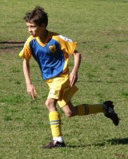

| Match Report - 18 July 2009 |
|
|
|
|
|
|
|
|
|
|

Off we go to James Henty 2. North Ryde being the home team against Gladesville at
Cherrybrook? Peculiar!
With Tom Hurst overseas and Jack and Jett unwell we are fortunate that Rhea is playing
with her team at the same ground the match before us. She kindly agrees to play another
game and help us out. Thanks Rhea.

Without a ref Mark Maclean takes up ref duties and does a fine job. Thanks Mark.
We grab some bright bibs and use these as flags for the linesman (woman in this case).
Whistle blows and we are off. Within the first few minutes NRS has the ball up at the
mouth of the goal but unable to convert. Looks like we are going to have to dig deep
to get some points on the board today.
Goalkeeper for the first half was Eli and he says he was nervous but feeling confident
with Tom Maclean as centre-back to help him out! Harrison was goalkeeper for the second
half and both boys managed to keep the score against us to nil.

There was only one goal scored today, but there were many goals that were oh so close!
The one goal we scored was a combination of terrific teamwork, fabulous footwork,
perfect passing and brilliant ball skills which for the spectators created a memorable
moment!
Well done North Ryde. Good luck next week.
- Cindy Berghofer (Manager)
|
|
|
|
|
|
An exciting game of soccer throughout with our boys having the better of the game
for much of the time however once again defensive lapses denied us a win. The game
see-sawed and each time we looked like the team was getting back into the game a
soft goal was scored by the opposition. Boys the ball really needs to be cleared
strongly and quickly from your danger zone, the penalty box is not an area to show
your fancy footwork!
Stephen B-H continued his goal scoring run with another double on Saturday, and the
third goal came from William G who has taken to his on-field role with a vengeance,
playing wherever he is asked to play and playing strongly in the midfield this game.
Regan C once again showed he is one of the best sweepers in the competition cutting
off many of Thornleigh's attacking raids.
All the boys had strong games and were more than ably supported by Mitch K, Ryan N
and Shane F from the U14 side, and Chris B from the U13 side. These 4 boys can hold
their heads up as they all had excellent games. Thanks to these boys and their
parents for making the effort to be there for us.
- Bill Greer (Manager)
|